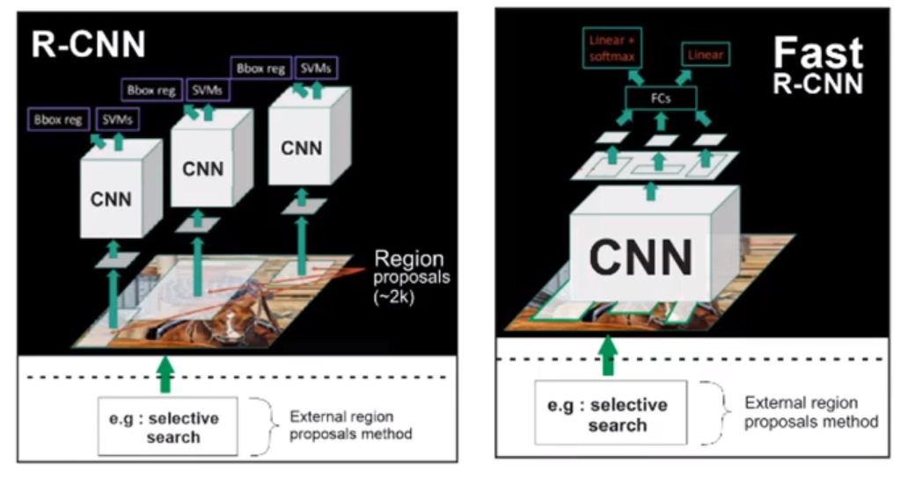
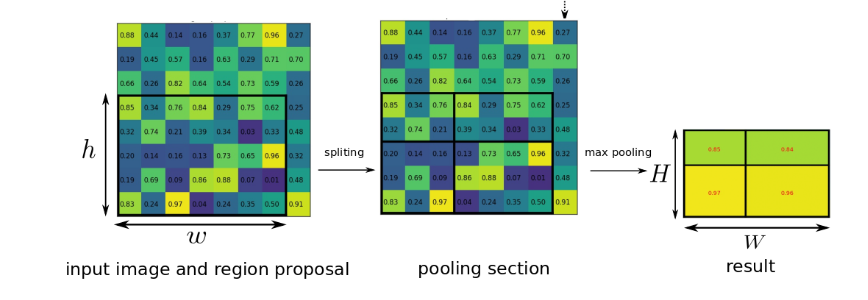
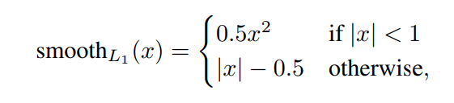
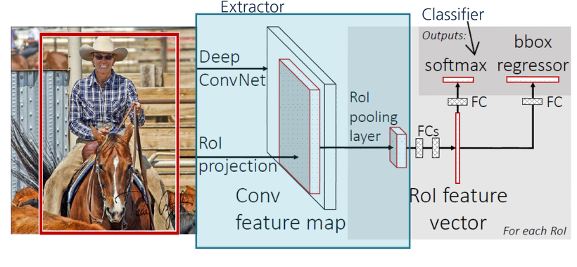
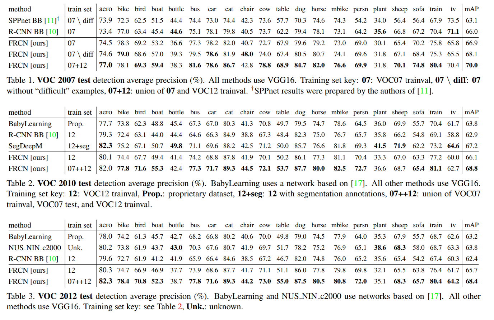
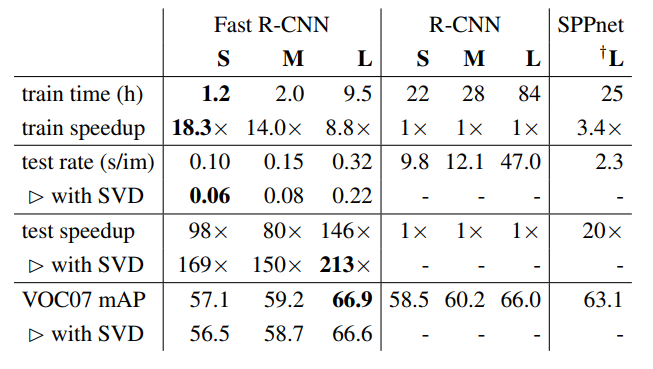
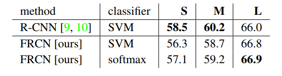

Faster R CNN
Fast R CNN
Faster R CNN은 이름으로도 알 수 있듯이 Fast R CNN에 기초하여 어떠한 것을 추가로 더한 것입니다. 그러니 먼저 Fast R CNN을 해야겠죠.
Region
Fast R CNN은 R CNN과 다른점이 있습니다.

- 기존의 R-CNN은 이미지에서 region을 잘라내고 그것을 CNN에 거쳐 feature를 추출합니다.
- Fast R-CNN은 CNN을 통과한 전체 이미지의 feature에서 region을 추출합니다.
Roi Pooling
각각의 region이 feature로 부터 추출됬을 때 뒤에 있는 네트워크를 통과하기 위해서 사이즈를 일정하게 맞춰줄 필요가 있습니다.
일정하게 할 사이즈를 7 x 7 (H,W)라 하고, 각각 추출된 Roi(Region of Interest)는 (r, c, h, w)의 4값을 가지고 있습니다. (r,c): top-left corner, (h,w): roi의 height & width
h/H x w/W로 sub window를 만들고 거기서 max pooling을 하여 output grid cell이 됩니다.

위 그림과 같이 h/H , w/W로 나누다보니 sub window는 가변적인 사이즈가되버립니다. 그리고 sub window를 bin이라고 합니다.
Back Propagation through Roi Pooling layer
전체 Loss $L$이 있을 때 이 $L$은 cls와 reg layer 뿐만 아니라 CNN에도 역전파로 $L$값을 전달해야 합니다.

- bin의 pooling 값을 $y{rj} = x{i*(r,j)}$ 이렇게 표현합니다.
- pooling할 값의 index를 구하는 과정은 $i^*(r,j) = \text argmax{i’\in R(r,j)}x{i’} \cdot R(r,j)$ 입니다.
Classifier & BBox Regressor
각각의 Roi에 대해 softmax를 사용하여 classification하고, regression을 이용하여 Roi의 (x,y,w,h)를 정의합니다.
- softmax 에서는 K + 1개의 class에 대해 softmax를 합니다. +1은 background
- regression 는 smooth l1 loss를 사용하며 식은 다음과 같습니다.

- smooth l1 loss에 대해 제 나름대로의 추측을 하자면 1보다 작은 값은 더 작게 하여 영향을 적게주고, 더 큰값은 -0.5만 주고 더 영향을 주게 하려는 것 같습니다.
Mini Batch Sampling
paper에 의하면 N개의 이미지에서 총 R개의 Roi를 가져와 R/N만큼 sampling하여 학습을 진행한다고 합니다.
그래서 N=2, R=128이므로(논문에서 정의된 parameter) 64개 만큼을 진행합니다
Fast R CNN Architecture

전체적인 Fast R-CNN의 구조는 이렇게 생겼습니다. 순서대로 설명해보자면
- 전체 이미지가 CNN을 거칩니다.
- feature map에서 Roi만큼을 잘라(crop)냅니다.
- feature map에서 crop된 Roi가 Roi pooling layer를 거쳐 H,W를 가진 size로 바뀝니다.(여기서는 7 x 7)
- Fully Connected Layer를 통과합니다.
- 통과한 feature vector가 다시 두 갈래(branch)로 나뉩니다.
- 두 branch 모두 각자의 FC를 거칩니다. 위에 있는 Cls & Bbox reg에 있는 과정을 수행합니다.
이렇게 Fast R-CNN이 어떻게 작동하는지 보았습니다.
Experiment
그러면 ‘Fast R-CNN이 R-CNN보다 어떤 점이 좋은가?’에 대해 알아봐야 겠죠.
Performance

다른 여러 object detection algorithm과 비교한 표인데 전체적으로 Fast R-CNN이 우수한 결과를 내고 있는 것을 알 수 있습니다. (test data는 VOC)
Training & Testing time

R-CNN을 기준으로 했을 때 9 ~ 20배 정도 속도가 빨라진 것을 볼 수 있습니다.(train 만 가정했을 때) test는 더 엄청납니다.
SVM & Softmax

표와 같이 R-CNN(SMV)이 S,M 사이즈에 대해선 가장 좋은 성능을 보여줬고,
Fast R-CNN에서는 SVM보다 Softmax가 조금 더 나은 성능을 보여줬습니다.